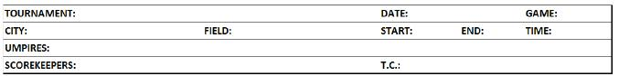
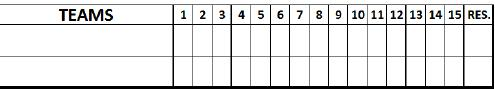

Heading first sheet

| Tournament |
Write the name of the competition (Olympic Games, World Cup, Intercontinental Cup, etc.). |
| Date |
Day, month and year of the game. |
| Game |
Game number according to the official schedule. |
| City |
City where game is taking place. |
| Field |
Name of the stadium where the game is being held. |
| Start |
Actual start time of the game |
| End |
Actual finish time of the game |
| Time |
Time required to play the game, with delays deducted for weather, light failure or technological failure not related to game action. A delay to attend to the injury of a player, manager, coach or umpire shall be counted in computing time of game. [OBR 9.02(l) and 9.02(l) Comment]
For example: a game begins at 16:00 and ends at 19:00,but is suspended for 20 minutes because of rain, the "Time" box would contain the time 2:40, not 3:00. The interruption is recorded in the notes. |
| Umpires |
Names of Umpires with surname in block capital letters, first name in small letters, and nationality (in brackets),listed in this order: plate umpire, first-base, second-base, third-base, left-field (if any), right-field (if any) [OBR 9.02(k)]. |
| Scorekeepers |
Names of Official Scorers with surname in block capital letters, first name in small letters, and nationality (in brackets). |
| T.C. |
Names of Technical Commissioners with surname in block capital letters, first name in small letters, and nationality ( in brackets). |

| Teams |
The name of the visiting team, which is the first to bat, is written in the upper box. The name of the home team is entered in the box below. |
| 1, 2, 3, 4 etc. |
The number of runs per inning is written in the boxes. Where no runs are scored, a zero "0" should be entered (do not write ‘- ‘ or leave the box blank). When, in the second half of the final inning, the team that is second to bat is in the lead and does not go to bat, write "X" in the box (do not write "R" or leave the box blank). |
| Res . |
Final result . |